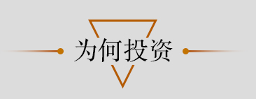

美国的非营利研究机构城市土地学会在通过对22座亚洲城市的调查得出的2015年投资前景排名
中，东京排名第一，大阪排名第三。结果表示，日本在“安倍经济学”指导下推出的刺激计划有
助于提升投资者对东京、大阪等城市的投资及兴趣，加上东京获得2020年奥运会举办权，日本
作为有望获得高收益的投资对象逐渐开始受到投资者的关注。当地房价上涨的前景以及风险下
降的观点也对这些城市有利。
另外，日元的贬值也起到了很大的推波助澜的作用，与2年前相比，现在只要当时的四分之三
的钱就能购买到同样类型的日本房地产。
据浅草当地的房地产公司株式会社M的执行业务主事相本有纪向记者介绍道：“东京繁华地区
房地产市场收益颇具吸引力，年度净收入和资产价格比为5%至15%。这一趋势从2010年变得明
显，今年更呈加速迹象。从宏观角度来看，在近3年内，东京、大阪中心地带房产价格预计将
上涨30%;从回报率来说，其新房的回报率高达5%左右，而二手房则更高。”
相本有纪认为，居住在世界各地的中国人购买位于东京闹市地区的投资用不动产有三点好处。
首先，投资日本房地产不仅有望升值，而且出租后的租金收入也是投资的主要目的之一。
了解更多